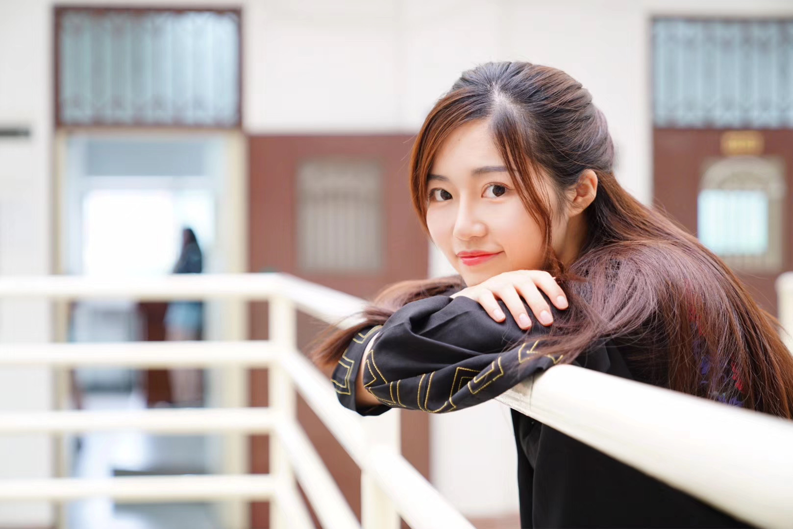

Xue Bai

Hi, I'm Xue Bai (白雪), currently studying at harvard GSD for MLA (Landscape Architecture) & MDes (Design Studies) dual degree.
I grew up in Hangzhou, a garden city in China, where I became really interested in Landscape. As for me, Landscape is a mirror of society, reflecting the needs of ordinary people, and it’s a tool for solving social problems and working towards social justice.
EDUCATION
Harvard University
Graduate School of Design
Master of Landscape Architecture &
Master in Design Studies
2019-2023 (expected)
Beijing Forestry University
School of Landscape Architecture
B.Eng of Landscape Architecture
2014-2019
GPA: 3.89 (Rank 4/136)
EXPERIENCES
Sasaki
Landscape Architect Intern
Jun 2021 – Aug 2021 • 3 months
- • Conceptual design for Hellinikon Metropolitan Park, Greece, rendering and planting design for the main plaza and coastal part
- • Sustainability and stormwater analysis for Sacramento State University planning
- • Master plan design and rendering for One Simmons Campus Redevelopment
- • Waterfront walkway design and topography study for Frisco North Planning
Reed Hilderbrand LLC Landscape Architecture
Landscape Architect Intern
May 2020 – Aug 2020 • 4 months
- • Research on the history of East Rock Park in terms of socioeconomic and racial-historical context
- • proposed potential improvements to meet the needs of the East Rock Park neighborhood
- • Schematic design for Georgia O'Keeffe Museum, rendering for the entrance and plaza.
- • Concept design for Stonington Cemetery, joining client meetings and section drawings.
- • Ecological study for the Ringing Point project, especially the trees and plants.
- • Plan renderings and context drawings for the Bridgeport park
UpHonest Capital
Venture Fellow
May 2020 – May 2021 • 1 year
- • Assist in connecting the resources and networks of the world’s most valuable and influential venture capital investment markets
- • Doing research on early-stage startups and then using different resources to boost value creation through disruptive means.
L&A Design Group
Landscape Architect Intern
Sep 2018 – Nov 2018 • 3 months
- • Conceptual design and construction drawing for "Taiyuan Gold Mansion” and "Taian Yihe Countryard" project
- • Collaborated with landscape architects and architects in detailed design
TurenScape
Landscape Architect Intern
Apr 2018 – Jun 2018 • 3 months
- • Graphics and analysis work for "Chongqing Changshou District Modern Agriculture Park Leisure Tourism Planning” project.
- • Collaborated with urban planners and architects in developing the layout of the new community, completed conceptual design.
Awards
- 2020 | BSLA Design Award
- 2020 | Shortlist Winner for "Reimagining the Spaces in Between Ideas Competition"
- 2017 | Liang-Xi Scholarship for Talented Student ( top 0.5% )
- 2016 | Outstanding Academic Scholarship ( top 0.5% )
- 2016 | Top Scholarship for Freshman ( top 1% )
- 2015 | National Dance Competition, Beijing District, 1st Prize